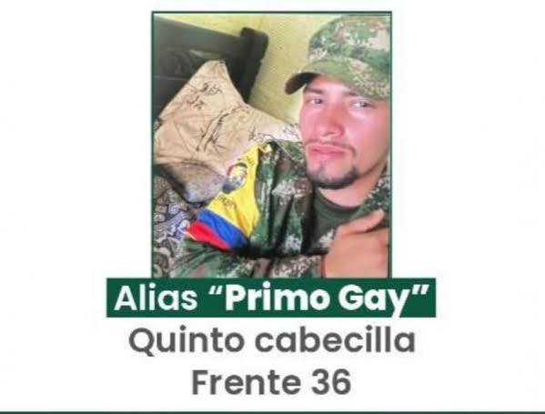
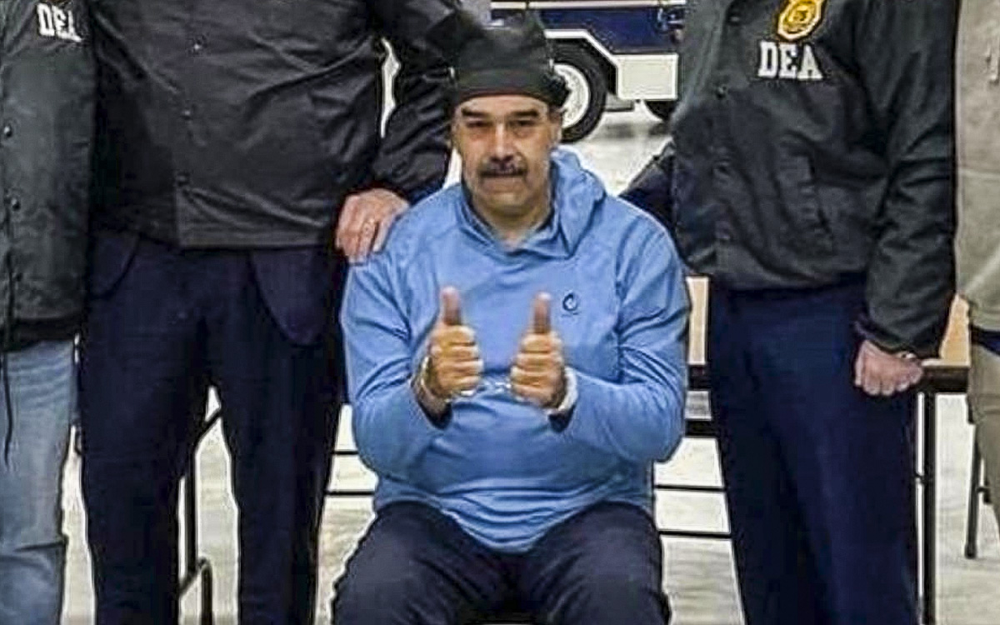
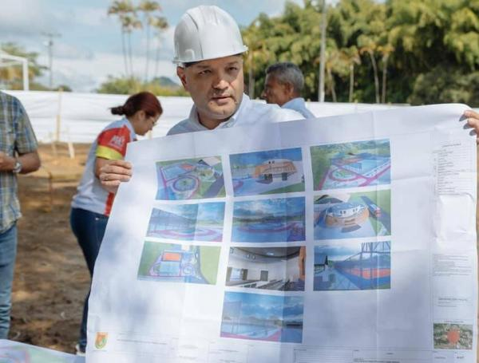
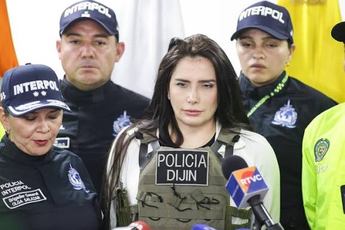

Casos Cerrados
⟵ Volver al Portal
ARCHIVO DE CAPTURAS
CAPTURADO
PRIMO GAY

Caso cerrado. Entregado con vida.
CAPTURADO
N. MADURO

Caso cerrado. Entregado con vida.
CAPTURADO
CARLOS MAYA

Caso cerrado. Entregado con vida.
CAPTURADO
AIDA MERLANO

Caso cerrado. Entregado con vida.
↑